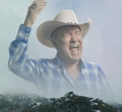
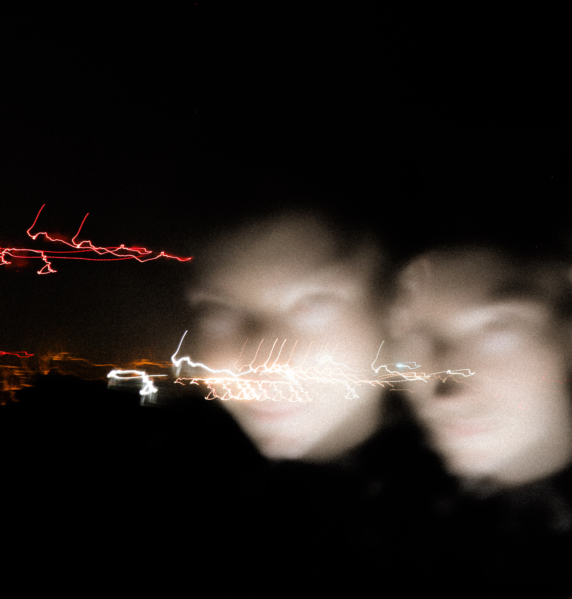

Music is how I truly express myself. It does something for me that nothing else can.
When I am playing music or writing music, the rest of the world seems to disappear, and I am only focused on one thing.
This page is a sample of some of the music I have made. Be sure to check out my Bandcamp at the bottom of this page for more.
Chased

Western Song
"Stranger Things" Cover
"Explosions in the Sky" Cover
